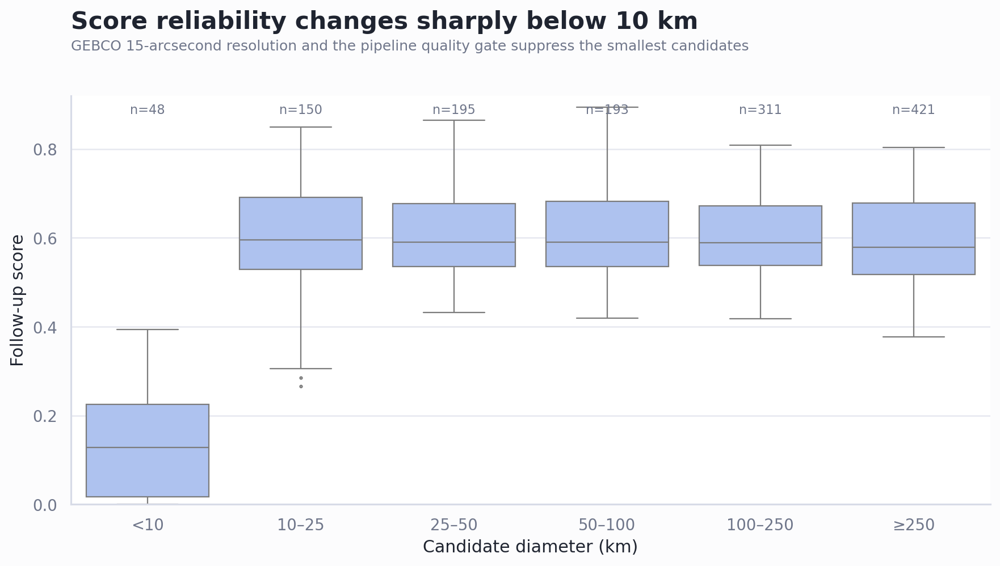
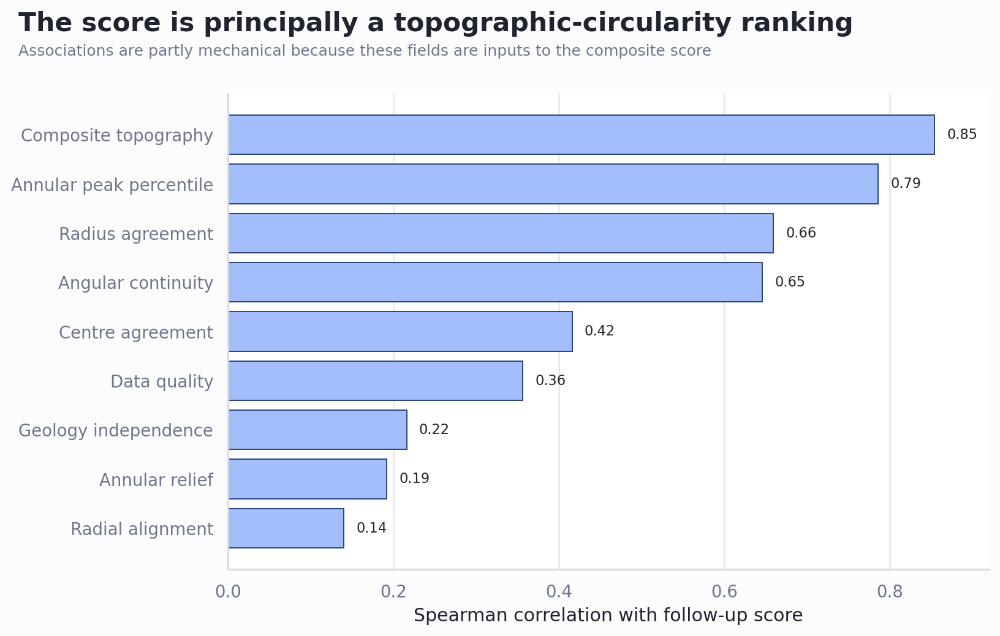

Manuscript gap audit
Cross-reference of the current manuscript against the completed morphology ranking, catalogue repair, spatial and geophysical nulls, structure consolidation, active-fault control, generated study GeoJSON, and the local impact literature corpus.
Technical summary
The manuscript’s main inference is now appropriately conservative and well supported. It clearly separates candidate screening from impact confirmation, keeps the size-scaling hypothesis open after the corrected non-significant rerun, and treats gravity as a follow-up signal rather than proof. The principal opportunity is to expose several completed results that materially constrain interpretation but are currently absent or only implicit: the severe sub-10-km resolution penalty, the score’s dependence on its own topographic-circularity inputs, the manual GEBCO observation process, the fact that imagery was not included in the completed ranking, and uneven coverage or inferential status across geophysical layers. [1–7]
Recommended scope: one short “ranking calibration and observation process” subsection, one compact layer-coverage table, one literature-grounded gravity paragraph, and a more balanced worked-example appendix. These additions would strengthen transparency without changing the paper’s headline conclusions.
Five additions would materially improve the paper
| Priority | Opportunity | Evidence now available | Best insertion |
|---|---|---|---|
| P1 | Report ranking calibration by scale. | For candidates below 10 km (n=48), median follow-up score is 0.128 and median data-quality weight 0.215; the median candidate spans only about 15 native GEBCO pixels. Scores are broadly stable from 10–1000 km, then decline again for ≥1000-km cases. [2] | New Results subsection immediately before geophysical enrichment; discuss the ≥1000-km class as a separate scale regime. |
| P1 | Make the observation process explicit. | The 1,318 arcs were manually captured over many weeks from visual inspection of GEBCO, while the same GEBCO field supplies the morphology measurements. Most records are near-perfect sampled circles. The ranking therefore measures concordance with a manually preselected, geometrically regular inventory—not independent discovery performance. [1,2] | Dataset paragraph and Limitations. Name interpreter selection, survey effort, and spatial autocorrelation as unmodelled components. |
| P1 | State that imagery was not part of the completed score. | The generated Sentinel-2 file is a request manifest; imagery_included=false in the review metadata. No aerial/optical pixel metric contributed to the reported morphology or cross-layer ranking. [2,8] | End of bathymetric/geophysical Methods. This prevents readers from inferring multisensor validation that did not occur. |
| P1 | Separate “available”, “screened”, and “formally tested” layers. | Bouguer, free-air, disturbance, isostatic and magnetic scores exist for 1,256 candidates; sediment coverage exists for only 523; CRUST1.0 is contextual. The final null table tests Bouguer, free-air, magnetic and TID—not every enriched column. [3,4] | Compact Methods/Results table listing resolution, valid n, role, and whether a global null was reported. |
| P2 | Balance the worked examples. | The current appendix examples are high morphology but Tier C because gravity support is weak. Add at least one Tier A screening case and Anton Dohrn (arc_0370) as a known volcanic negative control; retain the Tier C examples to show why morphology alone is insufficient. [3,5] | Appendix figure set and a short comparison table. |


What is already strong—and should not be diluted
The paper correctly avoids converting any of these into impact confirmation. It also already includes the strongest safeguards: French’s detection/verification distinction; repaired catalogue provenance; two spatial nulls; explicit non-diagnostic treatment of circular geophysics; the active-fault negative result; the Anton Dohrn warning; and a preservation-aware follow-up funnel. [1,3–7] Expansion should sharpen those distinctions rather than add speculative impact language.
Literature cross-check: the gravity result needs analogues, not stronger rhetoric
| Case | Lesson for this study | Suggested manuscript use |
|---|---|---|
| Bangui anomaly | A very large circular/elliptical magnetic and gravity association motivated an impact model, yet later regional reprocessing linked it to a broader Bangui–Atlantic trend and left the genetic link equivocal. [9,10] | Use as the closest African precedent for why compelling geophysical geometry justifies modelling and field tests, not impact classification. |
| Richat dome | Exceptional bull’s-eye morphology was historically proposed as impact-related, but field relationships, igneous features, karst-collapse breccia and lack of accepted shock evidence support an endogenic/erosional interpretation. [10] | Add as a morphology-first negative analogue alongside Anton Dohrn. |
| Sirente | Candidate-specific electrical-resistivity forward modelling can test predicted shallow structure and distinguish alternatives, while remaining “consistent with” rather than confirmatory. [11] | Supports the proposed move from global ring scores to candidate-specific forward models with discriminating predictions. |
| Lake Cheko | Target properties and post-event processes can change expected morphology and scaling; geophysical compatibility remained contested without a diagnostic “smoking gun.” [12] | Use sparingly to illustrate model non-uniqueness and why fitted geometry does not settle origin. |
Suggested gravity paragraph, in substance: circular gravity anomalies are physically plausible consequences of impact-related density redistribution, but Bangui demonstrates that even striking geophysical rings can merge into regional tectono-magmatic structure on reanalysis. Richat and Anton Dohrn provide complementary endogenic controls. The statistically enriched global signal should therefore motivate candidate-centred residual-field separation, wavelength/amplitude modelling, and blinded comparison with confirmed impacts and matched endogenic structures.
Additional clarifications worth making
| Priority | Clarification | Why it matters |
|---|---|---|
| P2 | State that the component–score correlations are descriptive decomposition, not predictor importance. | The highest correlations are expected because those components define the score. |
| P2 | Describe Tier A/B as operational review rules and report their domain composition (A: 13 land, 13 ocean; B: 5 ocean, 1 mixed, no land). | The Tier B composition may reflect thresholds, scale and data availability; it should not be read as geological prevalence. |
| P2 | Warn that per-candidate null p-values are quantized at 0.05; 172 Bouguer and 200 free-air candidates sit at that floor. | They cannot support candidate-level discovery claims or false-discovery-rate control. |
| P3 | Add a data-availability statement for the 1,318-feature enriched study GeoJSON and its schema, including blank manual-capture fields. | This turns the paper’s proposed review workflow into a reusable handoff artifact. [13] |
| P3 | Label the pre-repair decision report as superseded for catalogue counts and scale results. | Prevents accidental reuse of quarantined figures or the former 5.53 multiplier. [14] |
Methodology of this audit
The audit compared every substantive manuscript section with machine-readable summaries and row-level outputs from the ranking, catalogue-repair rerun, geophysical enrichment/nulls, structure consolidation, active-fault tests and enriched GeoJSON. Quantitative checks were recomputed or read from final outputs at candidate and structure grain. The literature review was restricted to the local corpus and prioritized primary papers plus the Reimold–Koeberl African synthesis. Earlier reports were treated as provenance only where later repair or reruns superseded their findings.
Limitations and robustness
- This is a manuscript-coverage audit, not a new causal analysis. Priority labels reflect editorial and inferential importance.
- The score-by-diameter and score-driver plots summarize the 1,318 arc records; structure-level inferential tests use 1,292 consolidated units where specified.
- Layer-valid counts differ because of domain coverage, resolution and missingness. They must not be silently treated as one complete-case cohort.
- The local literature corpus is strong for impact-recognition criteria and African candidates but is not a systematic global review of gravity signatures.
- The priority changes and expanded ranking examples were subsequently implemented and verified in the rendered 25-page PDF.
Recommended next steps
- Implement the four P1 manuscript changes: calibration/scale subsection, manual-observation and no-imagery disclosure, geophysical coverage/role table, and gravity analogue paragraph.
- Rework the appendix examples into a four-case contrast: Tier A candidate, Anton Dohrn negative control, and two high-morphology Tier C cases.
- Add one supplementary calibration figure using the existing score-by-diameter plot; move score-driver decomposition to supplementary material if space is tight.
- For the next analytical phase, define a blinded labelled control set and pre-register candidate-specific gravity models before examining individual identities.
Further questions
Before submission, the most consequential unresolved choice is whether the paper presents the morphology ranking as a reproducible prioritization tool or primarily as an audit of a manually generated hypothesis set. Both are defensible, but the first requires stronger external validation with labelled endogenic controls and withheld impact examples. The current evidence most strongly supports the second framing.
Sources reviewed
astrobleme.tex, current manuscript.results_review/source_notes.jsonand ranking-review figures.geophysical_output/evidence_summary.jsonandarc_ranking_enriched.csv.geophysical_output/nulls/*, final null summaries and candidate diagnostics.structure_output/summary.json, structure ranking and fault nulls.catalog_repair/catalogue_repair_summary.jsonand repaired rerun.- French, B.M. (1998), Traces of Catastrophe.
ranking_output/sentinel2_stac_requests.json.- Girdler, Taylor & Frawley (1992), “A possible impact origin for the Bangui magnetic anomaly,” Tectonophysics 212:45–58.
- Reimold & Koeberl (2014), “Impact structures in Africa: A review,” Journal of African Earth Sciences 93:57–175.
- Torrese (2022), “Subsurface structure of the proposed Sirente meteorite crater,” Acta Geodaetica et Geophysica 57:563–587.
- Gasperini et al. (2008), “Lake Cheko and the Tunguska Event: impact or non-impact?”, Terra Nova 20:169–172.
study_results_geojson/arcuate_geometries_study_results.geojsonand schema.decision_report/source_notes.json, retained only to identify superseded pre-repair findings.